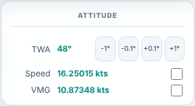
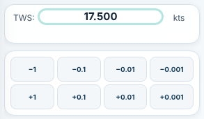
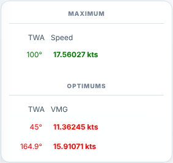

Polars Chart
Right Hand Side Panels
Layout
The column at the right of the chart holds the results: the Attitude, the TWS with its step buttons, and the Maximum and Optimums.
Attitude

This panel mainly provides the boat speed and the VMG, calculated according to the TWS, TWA, sail selected and options applied to the boat.
It also contains a few options/buttons:
- [ -1° ] / [ -0.1° ] / [ +0.1° ] / [ +1° ]
Decrease or increase the TWA with fine or coarse steps. - Boat Speed Checkbox
Displays the Boat Speed projection on the vertical axis of the Chart. - VMG Checkbox
Displays the VMG projection on the vertical axis of the Chart.
TWS Input

This panel provides an input field for the TWS.
Below, the buttons provide a convenient way to decrease or increase the wind speed. The minus buttons are on the first row and the plus buttons on the second row, from the coarsest step on the left to the finest on the right. The available steps automatically follow the precision requested with nbdigits.
In the example, 3 decimal digits enable steps from 1 kt down to 0.001 kt.
Maximum and Optimums

This panel displays the maximum speed and the two Best VMG for the current curve.
These indicators are set in bold if their TWA corresponds exactly to the boat's TWA.
These optimum are clickable to provide a convenient way to quickly set the boat's TWA to the corresponding optimum angle.
The Chart will reflect this change by moving its blue radius, and recalculating all the values displayed accordingly.